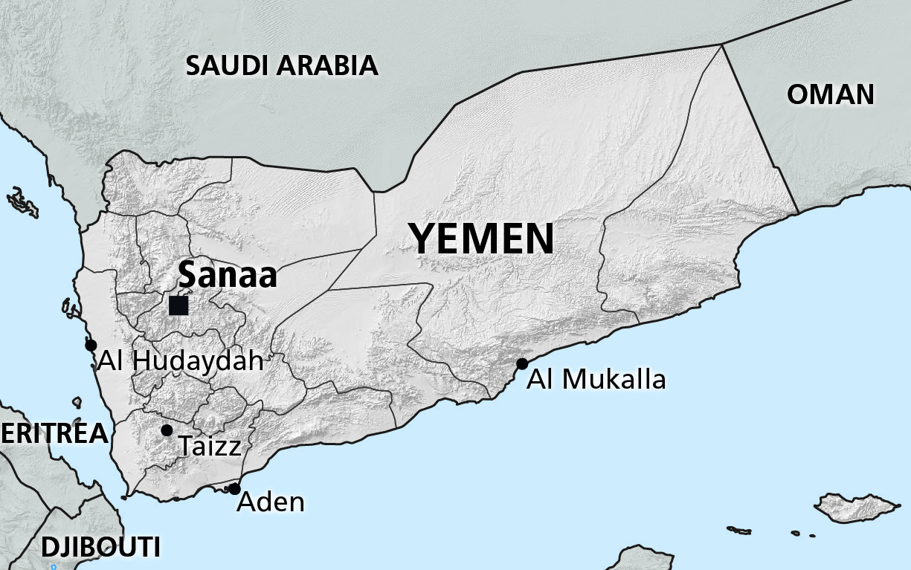
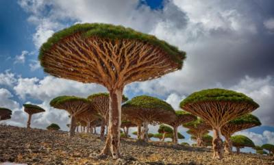
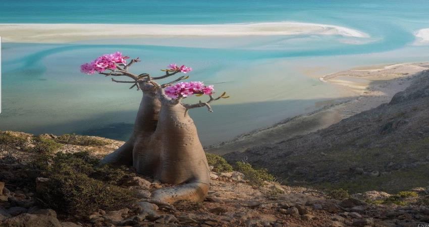

This is my first website and I would like to talk about myself and my country.
At first, I'm Rawan.I live in Turkey. My major is software engineering at gelisim university.
My country

My country is Yemen. The Republic of Yemen is an Arab country occupying the southwestern to southern
end of the Arabian Peninsula. It is bordered by Saudi Arabia to the north, the Red Sea to the west, the Gulf
of Aden and Arabian Sea to the south, and Oman to the east.Also in Yemen there is one of the most beautiful
islands. Sokotra, island in the Indian Ocean about 210 miles (340 km) southeast of Yemen, to which it belongs.
The largest of several islands extending eastward from the Horn of Africa, it has an area of about 1,400
square miles (3,600 square km). The Hajīr (Hajhir) Mountains occupy Socotra’s interior, with narrow coastal
plains in the north and a broader plain in the south.To the southwest and west are the smaller islands of
Samḥah and Darzah, called al-Ikhwān (“the Brothers”), and ʿAbd al-Kūrī, all of which also belong to Yemen.
The islands stand on coral banks and may once have been connected with the African and Arabian mainlands.Socotra’s
flora includes several famous species, among them myrrh, frankincense, and the dragon’s blood tree.In recognition
of its distinct plant and animal life, the archipelago was designated a UNESCO World Heritage site in 2008.


Wadi Dawan: